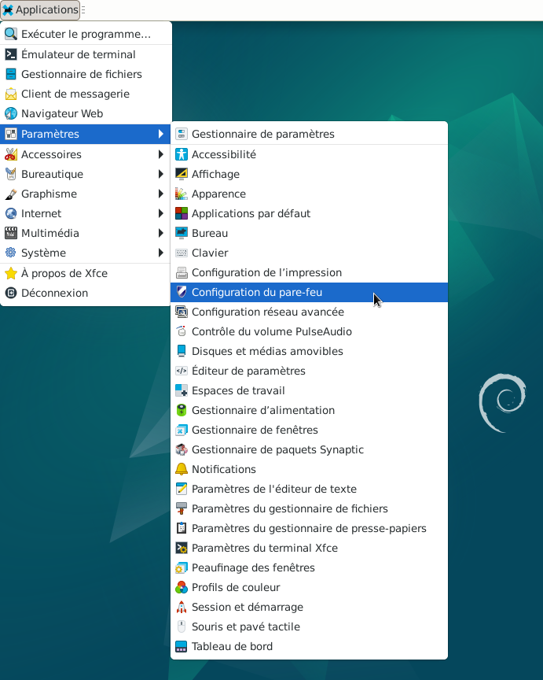
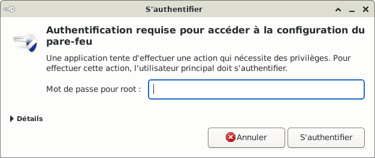
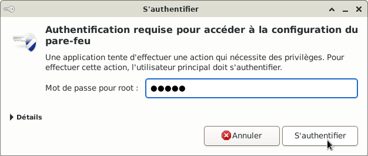
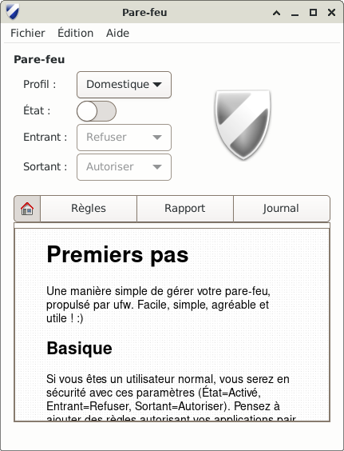
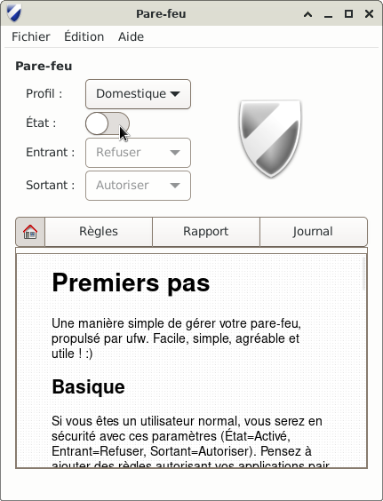
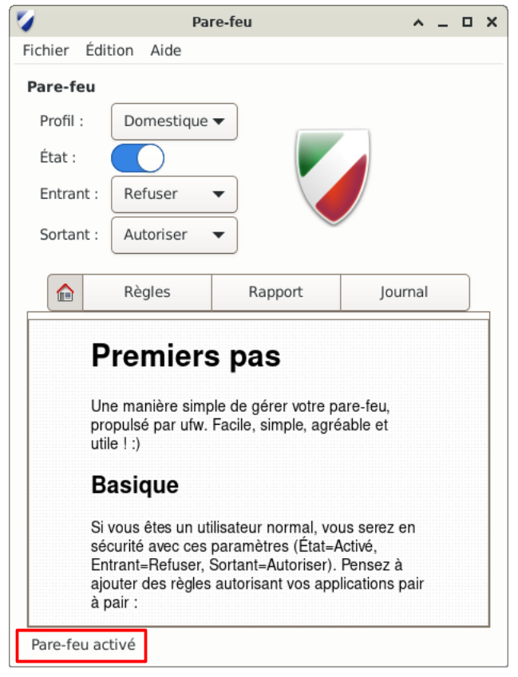
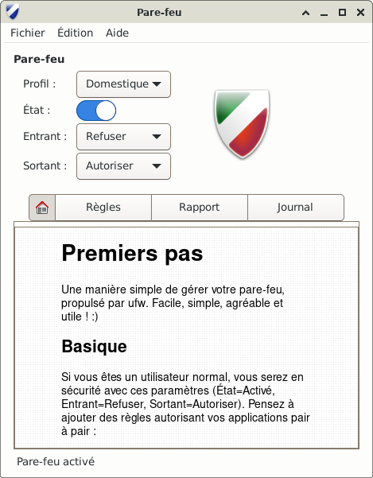
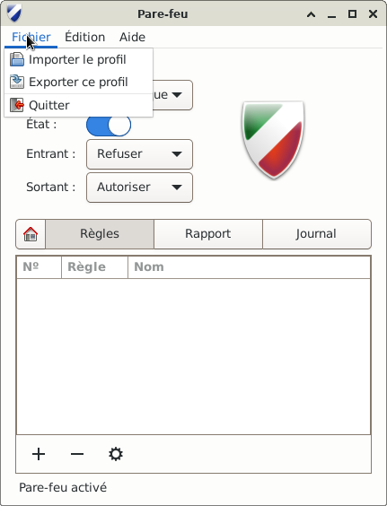
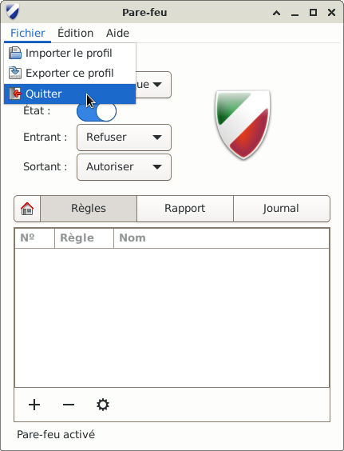

&
Le pare-feu avec l'interface utilisateur graphique gufw : Projects/gufw
Le pare-feu est un composant essentiel de la sécurité de votre réseau domestique.
Lire la suite plus détaillée
ici.
Gufw est un moyen facile et intuitif pour gérer un pare-feu Linux.
C'est l'interface utilisateur graphique pour ufw.
L'utilisation de la ligne de commande ne sera pas vue ici.
Installer les paquets suivants :
Pour l'installation des paquets se reporter au chapitre : Ajout d'une application ou de paquets
En conclusion : nftables > iptables > ufw > gufw










Informations sur le logiciel libre et Merci.
Marques déposées :
Ce site ne fait pas partie de Debian, n'est pas produit par le projet
Debian, ni approuvé par le projet Debian.
Ce site n'est pas affilié à Debian. Debian est une marque déposée appartenant
à Software in the Public Interest, Inc.
Contribuer :
Ce site ne fait pas partie de XFCE, n'est pas produit par le projet
XFCE, ni approuvé par le projet XFCE.
Ce site n'est pas affilié à XFCE.
Ce site est juste réalisé par un passionné.